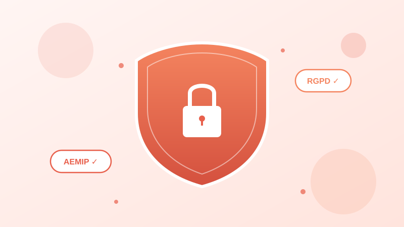

¿Son seguros los préstamos online? Claves para identificar empresas fiables

Cuando buscas "préstamos rápidos" en internet, aparecen decenas de opciones. Algunas son empresas serias y reguladas; otras, lamentablemente, no lo son. Saber distinguirlas es esencial para proteger tu dinero y tus datos personales.
En este artículo te enseñamos las señales claras de confianza que debes buscar — y las banderas rojas que indican que es mejor buscar otro prestamista.
El sector de micropréstamos en España: ¿está regulado?
Sí, y esto es una buena noticia. Las empresas de micropréstamos en España operan dentro de un marco legal que incluye:
- Ley 16/2011 de contratos de crédito al consumo: obliga a las entidades a informar de manera clara y transparente sobre todas las condiciones del préstamo, incluyendo el TAE y el coste total.
- Reglamento General de Protección de Datos (RGPD): protege tus datos personales y exige el consentimiento explícito para su tratamiento.
- Ley de prevención del blanqueo de capitales: obliga a verificar la identidad de todos los solicitantes.
Además, existe la AEMIP (Asociación Española de Micro Préstamos), una asociación sectorial que agrupa a las principales empresas del sector y promueve un código de buenas prácticas voluntario.
¿Qué es AEMIP y por qué importa?
La AEMIP es la principal asociación del sector de micropréstamos en España. Sus empresas miembros — como Vivus, Wandoo, CreditoZen, Cashper y One Prestamos — se comprometen a cumplir un código de conducta que incluye:
- Transparencia total: mostrar claramente el coste del préstamo antes de la firma del contrato.
- Préstamo responsable: evaluar la solvencia del solicitante y no conceder créditos a personas que no puedan pagarlos.
- Trato justo en caso de impago: ofrecer alternativas razonables (prórrogas, planes de pago) antes de recurrir a acciones legales.
- Protección de datos: cumplir rigurosamente con el RGPD y las normativas españolas de protección de datos.
- Atención al cliente: disponer de canales de comunicación accesibles y responder a las reclamaciones en plazos razonables.
5 señales de que un prestamista es fiable
1. Información legal visible
Una empresa legítima muestra en su web: nombre completo de la sociedad, CIF, dirección física, datos de contacto y su inscripción en registros oficiales. En el caso de One Prestamos, la entidad titular es Newton Fintech Investment Spain, S.L., con sede en Barcelona.
2. Transparencia en costes
Antes de firmar nada, debes poder ver claramente: el importe solicitado, el tipo de interés (TIN), la Tasa Anual Equivalente (TAE), el importe total a devolver y la fecha de vencimiento. Si esta información no aparece de forma clara, desconfía.
3. Proceso de verificación de identidad
Si un prestamista te ofrece dinero sin verificar quién eres, es una señal de alarma. Las empresas serias están obligadas por ley a verificar tu identidad mediante DNI/NIE y, en muchos casos, una videollamada o selfie.
4. Política de privacidad detallada
Debe existir una política de privacidad accesible que explique qué datos recogen, para qué los usan, con quién los comparten y cómo puedes ejercer tus derechos (acceso, rectificación, cancelación). Busca la mención explícita del RGPD y los datos del Delegado de Protección de Datos (DPD).
5. Canales de reclamación
Las empresas reguladas deben ofrecer un procedimiento de reclamaciones. Además, como consumidor en España, siempre puedes acudir a la Oficina de Atención al Usuario de Servicios Financieros del Banco de España o a las Juntas Arbitrales de Consumo.
Banderas rojas: cuándo no confiar
Evita cualquier prestamista que presente estas características:
- Te piden dinero por adelantado: ningún prestamista legítimo cobra comisiones antes de conceder el préstamo.
- No muestran información legal: si no puedes encontrar el nombre de la empresa, CIF o dirección, huye.
- Prometen aprobación garantizada: ninguna empresa seria puede garantizar un préstamo al 100% sin evaluar tu solvencia.
- Te contactan por WhatsApp o redes sociales: los prestamistas regulados no captan clientes por mensajería privada.
- La web no tiene HTTPS: si la URL no empieza por "https://", tus datos no viajan cifrados.
One Prestamos: nuestro compromiso con la seguridad
En One Prestamos nos tomamos la seguridad muy en serio. Esto es lo que hacemos para protegerte:
- Miembros de AEMIP: cumplimos con el código de buenas prácticas del sector.
- Cumplimiento RGPD: tus datos están protegidos bajo la legislación europea más exigente. Puedes contactar con nuestro DPD en dpd@oneprestamos.com.
- Conexión cifrada: toda la comunicación con nuestra web está protegida por certificado SSL.
- Transparencia total: antes de firmar, te mostramos el coste exacto de tu préstamo sin letra pequeña.
- Evaluación responsable: no concedemos préstamos a personas que no puedan pagarlos.
Solicita con confianza
One Prestamos: miembro de AEMIP, cumplimiento RGPD, transparencia total.
Solicitar préstamo seguro